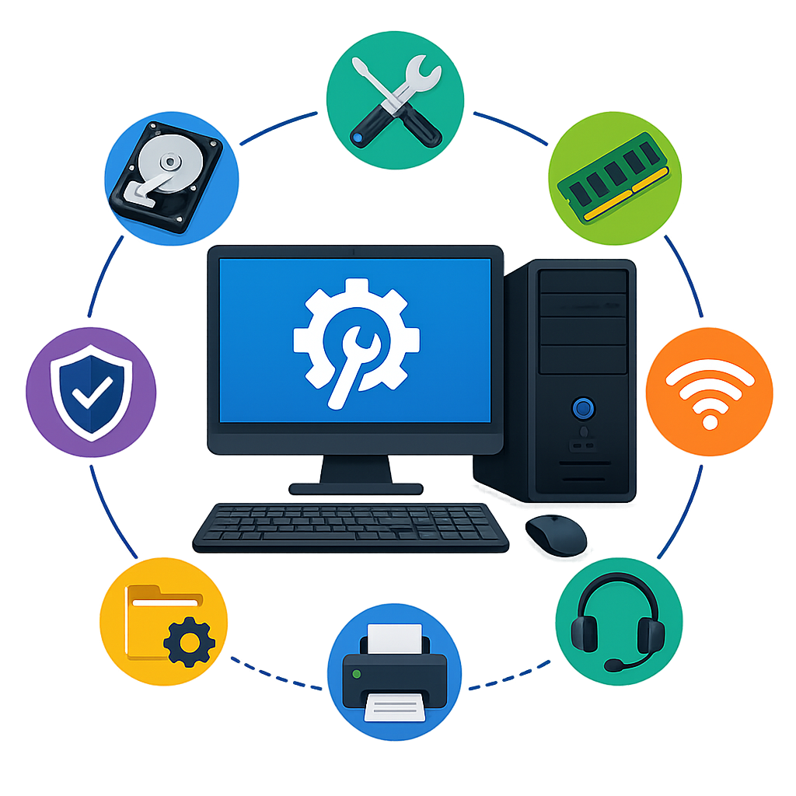

Academic Records

Strong knowledge of computer hardware, software, troubleshooting, and technical support. Experienced with PC systems. Passionate about solving technical problems, building efficient systems, and continuously improving my skills.

3+ years in diagnosing computer issues, setting up systems, installing software, maintaining Windows PCs, resolving technical problems, and helping users with clear, practical support.
I provide clear customer support by listening to people’s questions, understanding what they need, and helping them in a professional way.
I use problem-solving skills to handle daily issues, find practical solutions, and complete tasks without slowing down the work environment.
I follow procedures carefully and pay close attention to detail to make sure tasks are completed correctly, safely, and consistently.
I stay organized and remain focused while working under pressure, especially in busy environments where tasks need to be completed on time.
I work well with team members by communicating clearly, helping when needed, and supporting daily operations so everything runs smoothly.
Stayed focused on accuracy, organization, and completing tasks correctly the first time. Built strong habits in troubleshooting, problem-solving, documentation, and careful task management that transfer well into computer tech.
Worked with team members to complete tasks efficiently, communicate clearly, and support a smooth work environment. Stayed dependable under pressure and helped the team stay organized during busy periods.
Followed workplace procedures to maintain consistent standards, accuracy, and reliable results. Reviewed tasks carefully, identified issues early, and corrected problems before they affected daily operations.
Managed multiple responsibilities, stayed organized, and completed tasks based on priority and urgency. Built strong time management skills by working under pressure, adapting to changing needs, and keeping daily work on track.
Identified issues quickly, stayed calm under pressure, and used practical steps to find effective solutions. Built strong troubleshooting habits by analyzing problems, following procedures, and improving how tasks were completed.
Followed safety procedures, handled responsibilities carefully, and stayed aware of risks in the work environment. Developed safe work habits that connect well to computer tech, including protecting equipment, following proper steps, and preventing avoidable mistakes.
Sheridan College (2026)
Focused on computer hardware, software support, networking, system maintenance, and technical troubleshooting. Experienced with PC setup, diagnostics, operating systems, device configuration, and customer-focused IT support.